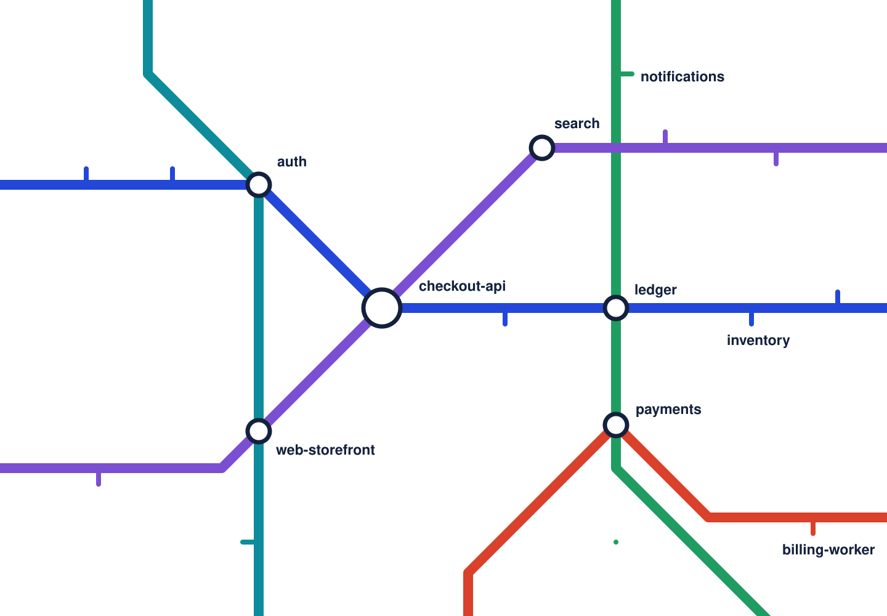

Every service on a paved track to production
Switchyard is the internal developer platform that gives engineers new services, preview environments and safe deploys on their own, on paths your platform team defines once.
Runs in your cloud. SOC 2 Type II. SAML SSO on every paid plan.

Platform teams at 140 engineering orgs run on Switchyard
Northwind Halden Bank Parcelry Medisana Labs Fjell Orbital FreightThe timetable, before and after
What routine engineering work takes when it goes through tickets, compared with self-serve on Switchyard.
| Task | Before | With Switchyard |
|---|---|---|
| New service, from idea to first production deploy | 12 days | 25 minutes |
| Preview environment for a pull request | Half a day, by ticket | 94 seconds |
| Find who owns a failing service | A Slack thread | One search |
| Roll a base image patch to every service | A sprint | One pull request |
| New engineer ships to production | Week three | Day one |
One route from commit to customer
Your platform team sets the route. Every engineer follows it without asking for access, waiting on a queue, or copying last year's pipeline.
Pick a golden path
Choose a template for the kind of service you need. Repo, CI, infrastructure and dashboards come with it.
Push your code
Builds, tests, SBOMs and policy checks run the same way for every team, in your cloud.
Preview every pull request
Each pull request gets a full environment with seeded data and a link reviewers can open.
Promote to production
Canary, verify and roll out by region, with automatic rollback when error budgets slip.
Write the standard once. Every new service inherits it.
Golden paths are versioned templates your platform team owns. Update one, and Switchyard opens upgrade pull requests on every service built from it.

Six lines, one platform
Use the whole system or start with the line that hurts most today.
Service catalog
Every service, owner, dependency and runbook in one searchable place, kept current from your repos.
Golden paths
Versioned templates for services, jobs and infrastructure, with upgrades delivered as pull requests.
Environments
Preview, staging and production on your Kubernetes clusters, created and torn down automatically.
Deploy pipelines
Progressive delivery with policy gates, approvals and rollback, defined as code.
Scorecards
Grade services on security, reliability and ownership standards, and track them as they improve.
Cost and ownership
Cloud spend broken down by service and team, next to the people who can change it.
| Service | Owner | Status | Grade | Last deploy |
|---|---|---|---|---|
| checkout-api | Payments | Healthy | A | 2 min ago |
| ledger | Payments | Healthy | A | 1 h ago |
| billing-worker | Payments | Deploying | B | now |
| fraud-score | Risk | Healthy | C | 3 days ago |
| payouts | Payments | Healthy | A | yesterday |
| refunds-api | Payments | Healthy | B | 4 h ago |
What each approver needs to say yes
Buying a platform involves engineering leadership, the people who will run it, and the people who sign for it. Here's where each of them can start.
Engineering leadership
- Lead time and deploy frequency, tracked per team from day one
- Typical payback inside two quarters on platform headcount alone
- Adoption reporting you can take to the board
Platform and tech leads
- Config as code in your repos, with no proprietary DSL
- Runs on the Kubernetes, Terraform and CI you already have
- Open API and CLI, with full export if you ever leave
Security and procurement
- SOC 2 Type II and ISO 27001, report available under NDA
- Source code never leaves your cloud
- Standard MSA and DPA, annual invoicing, purchase orders accepted
We had a platform team of six answering tickets all day. Now they ship golden paths, and the other 300 engineers don't wait on anyone to get to production.
VP Engineering, Parcelry
See your own services on Switchyard
A 30-minute call with a platform engineer. Bring a repo; we'll import it live.